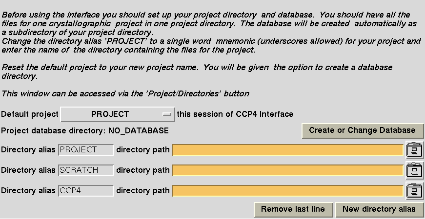
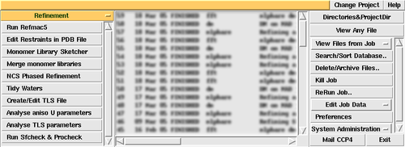

|
CCP4i: Graphical User Interface |
| Introduction |


|
Saving and Restoring Task Parameters
The Mouse Buttons and Function Keys
The reference for CCP4i is:
E. Potterton, P. Briggs, M. Turkenburg and E. Dodson
Acta Cryst. (2003). D59, 1131-1137
"A graphical user interface to the CCP4 program suite"
To run the Interface you must have the standard CCP4 program setup - it will stop with a warning message if it can not find CCP4 programs and data files! Then type:
There are various levels of documentation in and around the Interface:
The first time you run the Interface, the window which enables you
to set up directory aliases and define a project directory comes up automatically:
.
Alternatively it can be accessed via the Directories&ProjectDir
button near the top right of The Main Window.
The CCP4 Interface is designed with the expectation that all data files relating to one crystallographic project will be in one directory. It is simple to override this but it may be helpful to organise all CCP4 work this way. You may have more than one project, and it is easy to switch between projects inside the Interface.
In the Directories&ProjectDir window, enter one-word aliases and the full pathname for the directories you use regularly. These directories can then be accessed quickly when selecting files via a menu that lists your directory aliases and goes straight to the directory you choose. The window allows distinction between two types of directories:
The Interface will automatically create a subdirectory of your project directory called CCP4_DATABASE. This is where the Interface stores its database for the project.
In the user's home directory CCP4i creates a directory .CCP4 which contains subdirectories:
In the .CCP4 directory a CCP4_session.log is created and extended as the user runs CCP4i. This file contains information which might help with trouble shooting. The contents can be viewed using the View Session Log option under the System Administration menu (bottom right of the Main Window, in the Database Options menu).
The contents of the unix or windows directories:
Older versions of CCP4i used different ways of saving defaults. This may have left various files in the user's home directory, e.g. .CCP4_configure, .CCP4_directories, .CCP4_directories_old, .CCP4_preferences, .CCP4_session_log, .CCP4I_session_log, .CCP4_status. When using version 1.2, these can all be removed.
Here is what the Main Window looks like (individual parts of the picture are clickable):
|  |
The main window is composed of windows, menus and buttons. Apart from the gold-coloured bar at the top, which is reserved for HELP (see above), these are as follows (from top left to bottom right):
Choose module menu bar - with a pop-up menu for the modules of the Interface. Linked to each module are a set of tasks, displayed in the:To use the following Database Options, you must first select a job from the job list. A more detailed description of The Database Utility can be found elsewhere.
The main window can be resized to alter the size of the windows and menus, which also have scroll bars.
The Interface will run most frequently used programs from the CCP4 suite but is organised around the idea of tasks rather than programs. Usually one task corresponds to one program but sometimes more than one program may be required to perform a task or a program may be used in different tasks. The tasks are grouped into modules according to the stage in the crystallographic process they are used in (e.g. Density Improvement and Refinement are two separate modules) and three utility modules which contain tools which apply to the three main types of data (i.e. Map & Mask Utilities, Reflection Data Utilities and Coordinate Utilities). There is also a Program List 'module' which has an alphabetic list of interfaced programs.
The name of the current open module is in the Choose module menu bar on the upper left of the main Interface window in a gold colour (the background colour of the documentation you are now reading). To use the pop-up menu:
A scrollable list of tasks will appear beneath the name of the module. Click on the task name to open the task window. Only one instance of each task window can be open at a time but windows for different tasks can be open simultaneously.
Note that some tasks may be disabled - this is indicated by the text on the button being "greyed out", by the fact that the button doesn't function, and by the text "disabled" appended to the end of the task description. Tasks are disabled in this fashion when explicit dependencies for the task (for example the presence of certain programs) are not found.
More detailed information about the dependencies, and how to obtain and install them, is given in the Additional Programs section. Alternatively if you wish to launch the disabled task (for example to set up a run on a remote system where the software is installed) then there is an option to do this in the Configure Interface window. The tasks will no longer be greyed out but will be displayed in italic font to indicate that the full functionality is not available.
All of the task windows have a common format.
Each task window is divided horizontally into sections called folders. In general, the folders may be open so that you can see the contents, or closed so that only the title line is visible. Folder status is indicated by the small square button on the right hand side; it can be toggled open and closed by clicking anywhere on the title line.
The top two folders of a task window can not be closed, and are always:
The number and contents of the other folders will be dependent on the task, and folders which contain less commonly used options will be closed by default.
At the bottom of the task window are options for saving and restoring parameters (Save or Restore) and for running the task (Run).
The Interface makes assumptions about where input files will be (in the
Project directory) and where output files should go (either the Project directory or
TEMPORARY for large or temporary files). The TEMPORARY directory
is the CCP4 program scratch directory usually defined by the $CCP4_SCR
environment variable, but this can be changed in the
Directories&ProjectDir window.
These defaults/assumptions can be overridden using the following widgets:
In addition to (and as an alternative to) these widgets, you can use the File Name Completion feature. Typing the initial letters of a file name (wildcards accepted) and pressing the <Return>/<Enter> button will bring up a window listing all files whose names begin with those letters, one of which can be selected.
Each column selection line will allow selection of one or two sets of column data. Where there is the option to select two sets, the second set is a Sigma or Weight for the first set.
Input column data has a default selection of "Unassigned" until the input file is selected. Then the column data is read automatically from the file, and a pop-up menu, listing the names of all column data of suitable data type, is created. At the bottom of the menu list is a List All Labels option which will list all the column labels (it may be necessary to use this if your columns do not have correct types).
Sigma or Weight column data in an MTZ file are assumed to be associated with the preceding data column. Where there is no such data in the MTZ file, an "Unassigned" option will appear in the menu. When you change the F or Phi column selection, the Sigma or Weight selection will be updated automatically.
Most programs do not have fixed requirements on column data input. The Interface usually has options in the Protocol folder for you to specify what you are trying to do and it will then provide the fields to enter the necessary column labels. Usually the first item on the column label line is compulsory but the Sigma or Weight may be optional and can be left as a blank or as "Unassigned".
To understand what these are, look at examples:
Both extending frames and toggle frames have two control buttons underneath them. The button on the right, which has a context-dependent label, allows the user to open an extra frame beneath those which might already be open. The button on the left is a menubutton Edit List with access to some simple editing functionality to delete and copy frames. There are options to:
Extending frames are usually just single line frames but can have more than one line. Toggle frames are usually multi-line frames which also have a title line with a toggle button which controls the display of the frame contents. Note that closing a frame does not make the contents 'go away' or switch them off!
The standard facility of cutting a selection by holding down the left mouse button as you drag the cursor over the required text and pasting by clicking the middle mouse button while the cursor is in the target field, works throughout the Interface. All of the selected text will be put into the target field.
Cut and paste is often most useful for copying data such as coordinates which appear in the Interface as three separate fields. Using the conventional cut and paste to select the x,y and z coordinates and then pasting into the field for the x-coordinate would put all of the data in the x-coordinate field. To do this successfully, paste by holding down the SHIFT key and click with the right mouse button in the x-coordinate field. The input string will be split into words and the first word placed in the target field and the following words placed in the entry widgets to the right of the target field. If there is already data in any of these fields, it will be overwritten. If there are more words input than there are entry fields in the line, then the extra input data will be ignored.
It is sometimes useful to paste in several lines of data at a time - for example coordinates for several heavy atoms. This can be done if the target fields are part of an extending frame, i.e. if they appear in the Interface with the buttons Edit list and Add 'whatever' beneath them. The input text must be split into separate lines with one input line for each line in the Interface window. The first line of input text will be split into words and the first word placed in the target field that the user clicked; the following words will be placed in the following fields of the same line. The next line of input will be placed in the next line on the interface (if there is not a line there then one will be opened) with the first word entered in the field underneath the one clicked, and so on. Note that if the interface line has fields for extra data on the line either before or after the fields that you want to fill (e.g. atom types and Bfactors on the same line as coordinates), then the pasting option should handle this correctly.
Sometimes the input text might include extra words on the line which you do not want to go into the interface. To handle this, the Interface will display the Paste window when you try to paste multi-line text with the shift-right-mouse-button option. This window will list the input text and has options to skip input at the beginning and/or end of each input line.
Beware if the text you are copying from has very long lines which wrap round. When you select this text, the wrap round text will be considered to be on a new line.
Entry fields which MUST have some user input for the task to run are indicated in a contrast colour (the gold background colour of the documentation you are now reading) which persists until you have entered something appropriate. Any field will adopt the contrast colour if your input is inappropriate. The Interface checks your input either when you press the <Return> key with the cursor in the entry field or when you move the cursor out of the entry field. Currently the checking is:
At the bottom of task windows is the option to Save or Restore the parameters set up with the task interface. This provides a means to save your parameters which is supplementary to the Database - when a job is run, the Database automatically saves the parameters which can be accessed again via the ReRun Job button.
The Interface convention is for files with lists of parameter values to have the extension .def and to have a simple common format. For example the initial parameters of any task interface are defined in files called $CCP4I_top/tasks/taskname.def.
The Interface keeps the contents of the task window for the duration of the present Interface session, or until you change them manually.
| Save or Restore option | description | |
|---|---|---|
| Save to File | ||
| > | User's Defaults Directory | The parameters will be saved to a file $HOME/.CCP4/CCP4I_TOP/tasks/taskname.def.
Whenever you run this task, the parameters will be taken from
this file unless you also set a project default file which will take precedence. BEWARE: Use this option with discretion or you could find your version of the Interface always coming up with the 'wrong' parameters. It may, however, be useful for tasks with a lot of input that you will run repeatedly. You can unset the defaults with the Unset Project Defaults option. |
| > | Current Project Default | The parameters will be saved to a file in the current project database subdirectory called $Project/CCP4_DATABASE/taskname.def where taskname is the name of the task. Whenever you run that task interface within the same Project, this file will be used to initialise the parameters in the Interface. Heed the warning above. |
| > | Select File Name | You will have to enter the name of the file to save parameters to. You will also need to explicitly Restore the parameters from this file. |
| Restore from File | ||
| > | User's Defaults Directory | Restore from file $HOME/.CCP4/CCP4I_TOP/tasks/taskname.def if the file exists. |
| > | Current Project Default | Restore taskname.def from the $Project/CCP4_DATABASE directory. |
| > | Select File Name | Select any previously saved .def file from a chosen directory. |
| > | Select Job Number | The Interface saves a .def file for every job that has run successfully. Select a job number (see the Job List window) and the .def file saved by the Database for that job will be read. |
| Restore Default Parameters | Clear all fields and restore default values. | |
| Unset Project Defaults.. | If the current contents of a default taskname.def file are no longer valid, you can unset them with this option. A small window will come up, pointing out the current project default file, in which you can choose to delete the .def file or to save it to another filename. | |
When all parameters are set to your satisfaction, use the Run button at the bottom left of the task window. There are three run modes:
A more detailed description of how to run jobs can be found elsewhere.
As soon as a job is set running, an entry for it will appear in the Job List, indicating the number of the job, day and time, STATUS, and task(s) of the job. The status information is updated as the job proceeds and the possible values are:
| ON_HOLD | The script has been created but not run. |
| STARTING | The Interface is writing the script to run the job. |
| RUNNING | The job is running. |
| ERROR | The job failed due to an error in the script (please report this to the Interface developers). |
| FINISHED | The job has finished. |
| KILLED | You have killed the job. |
| FAILED | A CCP4 program failed. Look at the log file first. |
| REPORTED | This job was run external to the Interface. Information entered through Enter Data for External Job in the Database Menu. |
| REMOTE | The job is running remotely (or may be waiting to run). Note that there may be a short delay between the job completing and it being reported as FINISHED. |
The log file can be viewed using View Files from Job from the Database menu and selecting View Log File. The display will be updated as the log file is written out.
The left mouse button is used to click options in the Interface.
The right mouse button will bring up appropriate documentation,
in the browser, of a field (could be a menu or a button, too) when the
focus is in it.
The right mouse button is also used to select a line in a list when you are
using the Edit List option.
The Shift-right-mouse can be used to paste selected data into multiple fields.
The F2 function key will deselect all jobs from the Job List.
Unix and CCP4 conventions for naming (sub)directories:
There have been a few problems with running Netscape (we are trying to fix them but they are easy to cope with if you know what is happening).
Netscape Does not Start
If you do not already have Netscape running then it should start, but if this does not happen
you may need to start Netscape outside CCP4i.
The Mail Window is Foregrounded
When you click on Help a Netscape window with the appropriate help text should be
foregrounded but sometimes the Mail window appears instead. You will have to find the right
Netscape window.
|
| Valid XHTML 1.0! Valid CSS! |